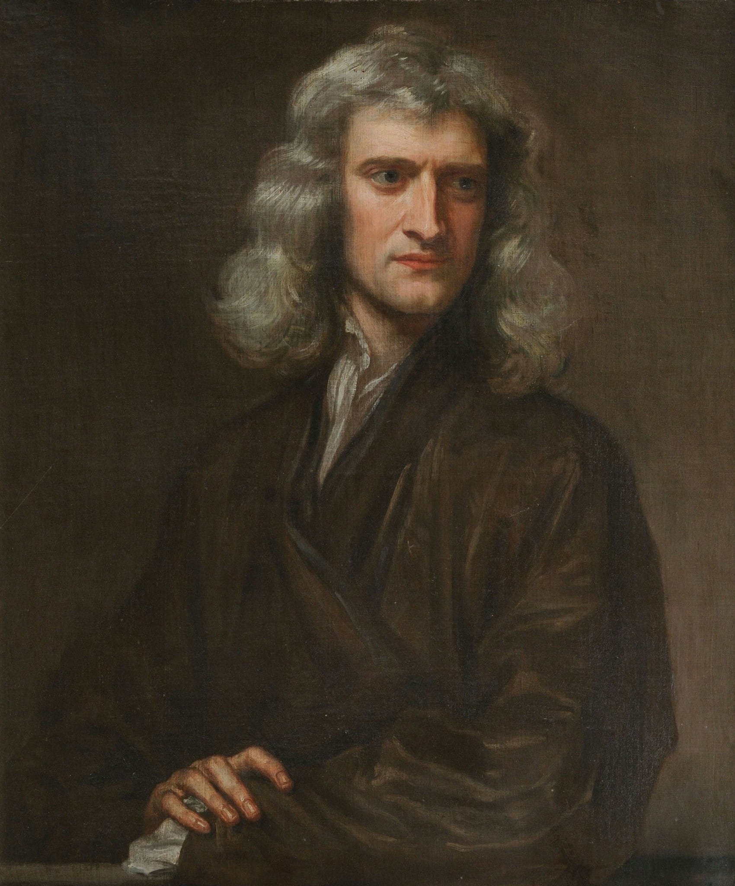
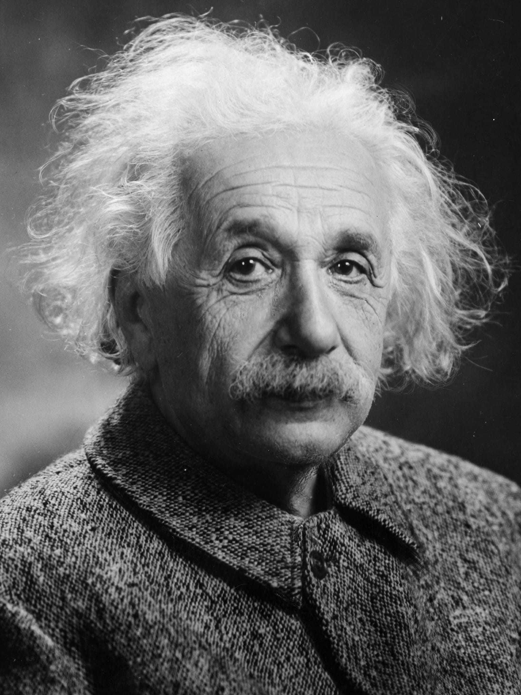
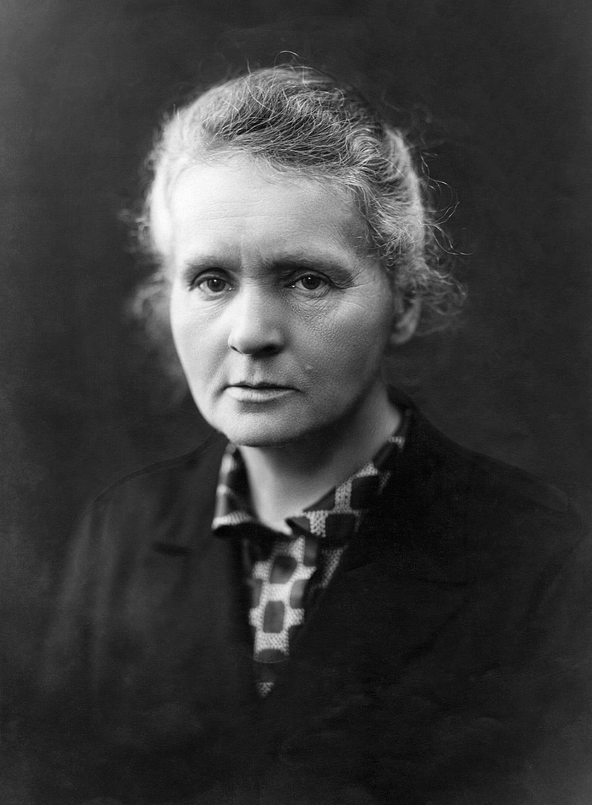
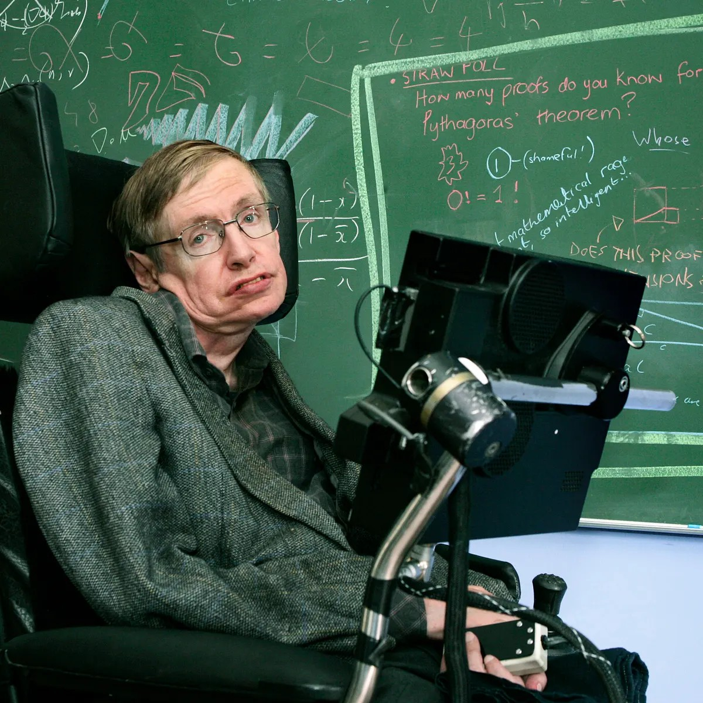

Istorie
Lumea științelor a evoluat de-a lungul timpului, de la antichitate până în prezent. Cercetătorii și filozofii din vechime, precum Aristotel, Galileo Galilei sau Isaac Newton, au avut o contribuție importantă la dezvoltarea științelor și la înțelegerea universului în care trăim.
În secolele XVII și XVIII, în Europa a avut loc o revoluție științifică, în cadrul căreia au fost formulate noi teorii și au fost efectuate descoperiri importante, care au condus la o îmbunătățire a standardelor de viață și la un progres tehnologic fără precedent. Acest lucru a continuat în secolul XX, când au avut loc noi revoluții științifice, precum revoluția atomică și revoluția informatică, care au avut un impact major asupra societății și asupra modului în care trăim.
Personalități
În lumea științelor există numeroase personalități remarcabile care au avut o contribuție importantă la evoluția științelor și la înțelegerea lumii înconjurătoare. Unii dintre aceștia sunt:
- Isaac Newton - fizician, matematician și astronom britanic, cunoscut pentru legea gravitației universale 
- Albert Einstein - fizician german, cunoscut pentru teoria relativității 
- Marie Curie - fizician și chimist polonez, prima persoană care a primit două premii Nobel 
- Stephen Hawking - fizician teoretic britanic, cunoscut pentru cercetările sale în legătură cu black holes și teoria generală a relativității 
- Richard Feynman - fizician teoretic american, cunoscut pentru contributiile sale la fizica cuantica
Domenii de studiu
Lumea științelor cuprinde numeroase domenii de studiu, inclusiv:
- Fizica - știința care se ocupă cu studiul universului la nivel macroscopic și microscopic
- Chimia - știința care se ocupă cu compoziția și proprietățile materiei
- Biologia - știința care se ocupă cu studiul vieții și al organismelor vii
- Astronomia - știința care se ocupă cu studiul universului și al obiectelor din univers
- Matematica - știința care se ocupă cu studiul relațiilor și structurilor abstracte
Contribuții la societate
Lumea științelor a avut un impact major asupra societății și asupra modului în care trăim. Contribuțiile includ: